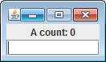
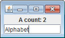
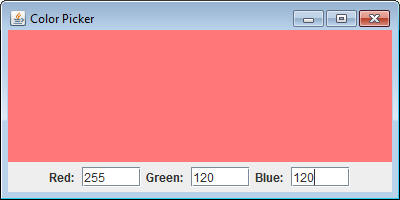

When SButtons are pressed, they call the onButtonPress method of the ButtonListener that's been added to it. This required three things.
1) A class with 'implements ButtonListener' in the header
2) That class should then have the method onButtonPress
3) button.addButtonListener should be called to link the two
classes together.
STextAreas can also respond to input, but since they're not buttons, a ButtonListener is not appropriate. The new listener is known as a KeyListener, and it works similarly. There are several things that you need all at once:
1) A class with 'implements KeyListener' in the header
2) That class should have two methods with the following
headers:
public void onKeyPress(int keyCode)
public void onKeyRelease(int keyCode)
3) textField.addKeyListener(... should be called to link the two classes together
KeyDemo: The a counter
Let's start with the demo below, which creates a simple GUI with no abilities yet.
import sacco.gui.*;
public class KeyDemo
{
private SFrame frame;
private SLabel label;
private STextField field;
public KeyDemo()
{
frame = new SFrame("KeyListener Demo");
frame.setLayout(new GridLayout(2,1));
label = new SLabel("A count: 0");
frame.add(label);
field = new STextField();
frame.add(field);
frame.pack();
}
public void launch()
{
frame.setVisible(true);
}
public static void main()
{
KeyDemo k = new KeyDemo();
k.launch();
}
}
Notice: The main method is in this class instead of a Runner class. This is perfectly legal. Since the method is static, it doesn't really matter which class it's in. From here on out you may continue to use a Runner class if you would like, but putting a static method inside of the class is another option.
Run the main method and confirm that you get the following:

You can type what you want, but nothing will happen. In order to make this GUI function without buttons we're going to have to attach a KeyListener to the STextField.
1) Change the header of the class to read:
public class KeyDemo implements KeyListener
2) Changing the header will cause this class to no longer compile until you have two methods. Add the following methods to the KeyDemo class:
public void onKeyPress(int keyCode)
{
System.out.println(keyCode);
}
public void onKeyRelease(int keyCode)
{
}
Note: Even if you're not going to use both of the methods you still have to include them for compiling purposes.
3) The last thing to do is to make sure that the STextField knows that it should be listening. In the constructor, after the field variable has been constructed, add the following line:
field.addKeyListener(this);
These three steps make our class functional.
Run the program again. This time typing in the STextField will cause ints to be printed out to the terminal. These ints are the 'keyCode' of each key that was pressed. If you notice, hitting the space bar will cause the number 32 to print because that's the keyCode for the space bar.
Finishing the KeyDemo
Now that we have a GUI set upt to call a specific method every time that a key is pressed, let's finish up the functionality of the program. Our goal is to have a correct count of the number of times that the A key has been pressed.-Go to the instance fields and add an int that represents how many times the a key has been pressed. Call it aCount and set it to 0.
- In the onKeyPress method, check to see if the keyCode is the A key ( meaning keyCode is 65 ). If it is, increase the aCount by one.
- The last thing the onKeyPress method should do is set the label's text to reflect the actual value of aCount. Don't forget to keep the "A Count: " text.
Run your program and type the word "Alphabet". It should say "A Count: 2" in the label.

Note that this is not a perfect system. Deleting and retyping a's will throw the count off. We can deal with this later.
Assignment:
Go to the ColorPicker assignment from before. The button that we have is a little unnecessary. Remove the button from the GUI and instead, make ColorPicker a KeyListener and modify it so that when the ENTER key is pressed (keyCode 10) the color is set. You will probably want to copy and paste much of the code from the onButtonPress method to make this function.
